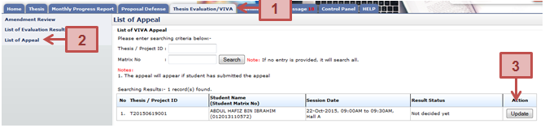
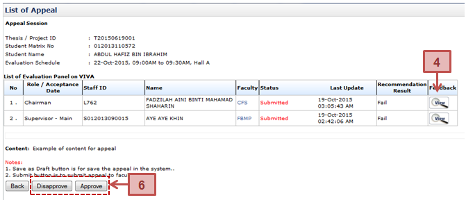
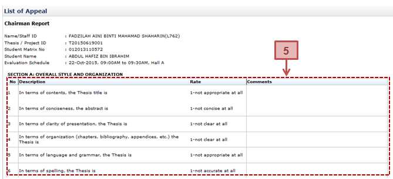

List of student who has been given a chance to appeal request by the Schoolboard due to thesis’s recommendation result failed in viva. Faculty will either approve or disapprove the request.



Prerequisite
Student has submitted the request for appeal.
Steps
Next Action
The Faculty is to approve or disapprove the appeal requested by the Student.
Warning
None
Note
None
Created with the Personal Edition of HelpNDoc: Easily create CHM Help documents